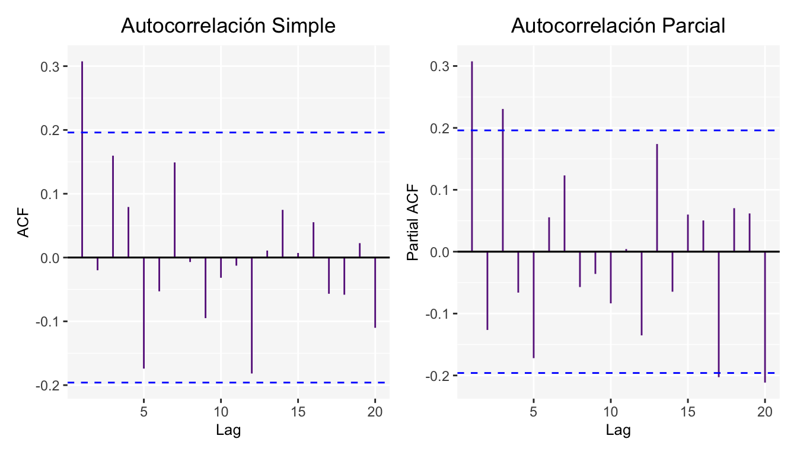
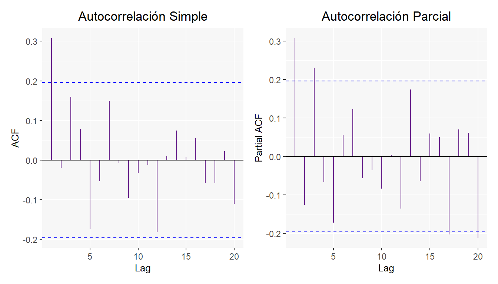

Capítulo 7 \(MA(q)\): Proceso de Medias Móviles
Estos modelos se puede decir son determinados por una fuente externa, además de que suponen linealidad. Es decir que el valor actual de la serie \(X_t\) esta influenciado por los valores de la fuente externa.
El modelo de medias móviles de orden \(q\) está dado por:
\[ MA(q): X_t - \mu =\epsilon_t - \theta_1\epsilon_{t-1}-\theta_2\epsilon_{t-2}-...-\theta_q \epsilon_{t-q} \]
Expresado en términos del operador de retardos
\[ \begin{split} X_t&=\mu+(1-\theta_1B-\theta_2B^2-...-\theta_qB^q)\epsilon_t\\ &=\mu+\theta_q(B)\epsilon_t \end{split} \] donde \(\epsilon_t\) es un proceso de ruido blanco, \(\theta_1,\theta_2, ..., \theta_q\) son los parámetros del modelo.
Antes de continuar, véase que es posible escribir un modelo \(AR\) con un \(MA\). Supongamos un modelo \(AR(2)\), en el cual se tiene lo siguiente
\[ \begin{array}{ll} AR(2): X_t = \phi_0+\phi_1X_{t-1}+\phi_2X_{t-2}+\epsilon_t\\ \implies \phi(B)X_t = (1-\phi_1B^1-\phi_2B^2)X_t = \phi_0+\epsilon\\ \therefore X_t = \frac{\phi_0}{\phi(B)}+\frac{\epsilon_t}{\phi(B)} = \mu+(1-\psi_1B^1-\psi_2B^2-\cdots)\epsilon_t \end{array} \]
Sin olvidar que las condiciones de estacionalidad para un proceso \(AR(1)\) y \(AR(2)\) son \(|\phi_1|<1\) y \(|1-\phi_1-\phi_2|>0\) respectivamente3.
7.1 Proceso de Medias Móviles de orden 1: \(MA(1)\)
Este modelo determina el valor de \(X_t\) en función de la innovación actual y su primer retardo, es decir:
\[ \begin{split} & X_t=\theta_0-\theta_1\epsilon_{t-1}-\epsilon_t = \mu-\theta_1\epsilon_{t-1}-\epsilon_t \\ \implies &X_t=\mu-(1+\theta_1 B)\epsilon_{t} \end{split} \] donde \(\epsilon_t\) es un proceso de ruido blanco y \(\theta\) es el parámetro. Además, véase que
\[ \mathbb{E}(X_t) = \mu-\theta_1\mathbb{E}(\epsilon_{t-1})-\mathbb{E}(\epsilon_{t}) = \mu \]
Por lo que este proceso ya es estacionario en su media. Sólo resta estudiar el caso para la covarianza. Asumiendo estacionariedad débil, se tiene lo siguiente
\[ \begin{split} \gamma_0 &= \mathbb{E}\left[(X_{t}-\mathbb{E}(X_{t}))^2\right]=\mathbb{E}\left[(\mu-\theta_1\epsilon_{t-1}-\epsilon_t-\mu)^2\right]\\ & = \mathbb{E}\left[\theta_1^2\epsilon_{t-1}^2+2\theta_1\epsilon_{t-1}\epsilon_{t}+\epsilon_t^2\right]\\ & = \theta_1^2\sigma^2+\sigma^2\\ & =(1+\theta_1^2)\sigma^2\\ \\ \gamma_1 &= \mathbb{E}\left[(X_{t}-\mathbb{E}(X_{t}))(X_{t-1}-\mathbb{E}(X_{t-1}))\right]\\ & =\mathbb{E}\left[(-\epsilon_t-\theta_1\epsilon_{t-1})(-\epsilon_{t-1}-\theta_1\epsilon_{t-2})\right]\\ & = \mathbb{E}\left[\epsilon_t\epsilon_{t-1}+\theta_1\epsilon_t\epsilon_{t-2}+\theta_1\epsilon_{t-1}^2+\theta_1^2\epsilon_{t-1}\epsilon_{t-2}\right]\\ & =\theta_1\mathbb{E}\left[\epsilon_{t-1}^2\right]\\ &= \theta_1\sigma^2\\ \\ \gamma_2 &= \mathbb{E}\left[(X_{t}-\mathbb{E}(X_{t}))(X_{t-2}-\mathbb{E}(X_{t-2}))\right] = 0\\ \vdots \end{split} \]
Entonces la función de autocovarianza de un modelo \(MA(1)\) es:
\[ \gamma_k = \left\{ \begin{array}{lr} (1+\theta^2)\sigma^2 & \mbox{ si } k=0\\ \theta_1 \sigma^2 & \mbox{ si } k=1\\ 0 & \mbox{ si } k>1\\ \end{array} \right. \]
Y la correspondiente función de autocorrelación de un modelo \(MA(1)\) es:
\[ \rho_k = \frac{\gamma_k}{\gamma_0} = \left\{ \begin{array}{lr} 1 & \mbox{ si } k=0\\ \frac{\theta_1}{1+\theta_1^2} & \mbox{ si } k=1\\ 0 & \mbox{ si } k>1\\ \end{array} \right. \] A continuación se muestran los resultados para un modelo \(AR(1)\) de la siguiente forma \(X_t=0.45\epsilon_{t-1}\)

Además de las gráficas de Autocorrelación simple y parcial.

7.2 Proceso de Medias Móviles de orden 2: \(MA(2)\)
Este modelo esta determinado por:
\[ \begin{split} MA(2): X_t & = \theta_0-\epsilon_t-\theta_1\epsilon_{t-1}-\theta_2\epsilon_{t-2}\\ X_t & = \theta_0-(1+\theta_1 B+\theta_2B^2)\epsilon_{t} \end{split} \]
donde \(\epsilon_t\) es un proceso de ruido blanco y \(\theta_1,\theta_2\) son los parámetros del modelo. Asumiendo estacionariedad débil, es fácil comprobar que \(\mathbb{E}(X_t) = \theta_0\). Respecto a la covarianza se tiene lo siguiente
\[ \begin{split} \gamma_0 & = \mathbb{E}\left[(X_{t}-\mathbb{E}(X_{t}))^2\right]=\mathbb{E}\left[(-\epsilon_t-\theta_1\epsilon_{t-1}-\theta_2\epsilon_{t-2})^2\right]\\ & = \mathbb{E}\left[\epsilon_t^2\right]+\theta_1^2\mathbb{E}\left[\epsilon_{t-1}\right]^2+\theta_2^2\mathbb{E}\left[\epsilon_{t-2}\right]^2\\ & = \left(1+\theta_1^2+\theta_2^2\right)\sigma^2\\ \\ \gamma_1 & = \mathbb{E}\left[(X_{t}-\mathbb{E}(X_{t}))(X_{t-1}-\mathbb{E}(X_{t-1}))\right]\\ & = \mathbb{E}\left[(-\epsilon_t-\theta_1\epsilon_{t-1}-\theta_2\epsilon_{t-2})(-\epsilon_{t-1}-\theta_1\epsilon_{t-2}-\theta_2\epsilon_{t-3})\right]\\ & = \mathbb{E}\left[\theta_1\epsilon_{t-1}^2+\theta_1\theta_2\epsilon_{t-2}^2\right]\\ & = \theta_1\left(1+\theta_2\right)\sigma^2\\ \\ \gamma_2 & = \mathbb{E}\left[(X_{t}-\mathbb{E}(X_{t}))(X_{t-2}-\mathbb{E}(X_{t-2}))\right]\\ & = \mathbb{E}\left[(-\epsilon_t-\theta_1\epsilon_{t-1}-\theta_2\epsilon_{t-2})(-\epsilon_{t-2}-\theta_1\epsilon_{t-3}-\theta_2\epsilon_{t-4})\right]\\ & = \theta_2\mathbb{E}\left[\epsilon_{t-2}^2\right]\\ & = \theta_2\sigma^2 \end{split} \]
Entonces la función de autocovarianza de un modelo \(MA(2)\) es:
\[ \gamma_k = \left\{ \begin{array}{lr} \left(1+\theta_1^2+\theta_2^2\right)\sigma^2 & \mbox{ si } k=0\\ \theta_1(1+\theta_2) \sigma^2 & \mbox{ si }\ k=1\\ \theta_2 \sigma^2 & \mbox{ si } k=2\\ 0 & \mbox{ si } k>2\\ \end{array} \right. \]
Y la correspondiente función de autocorrelación de un modelo \(MA(2)\) es:
\[ \rho_k = \left\{ \begin{array}{lr} 1 & \mbox{ si } k=0\\ \frac{\theta_1+(1+\theta_2)}{1+\theta_1^2+\theta_2^2}& \mbox{ si } k=1\\ \frac{\theta_2}{1+\theta_1^2+\theta_2^2}& \mbox{ si } k=2\\ 0 & \mbox{ si } k>2\\ \end{array} \right. \]